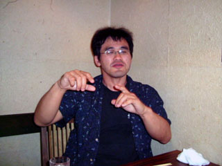
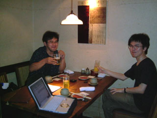

Rubyist Hotlinks 【第 9 回】 中田伸悦さん
はじめに
著名な Rubyist にインタビューを行う企画「Rubyist Hotlinks」。前回の田中哲さんからの紹介で、今回は Ruby のメンテナとして著名な中田伸悦さんにインタビューさせていただきました。
また今回のインタビューには、高橋編集長が同席しました。
プロフィール
- 座右の銘
- そのうちなんとかなるだろう
- 尊敬する人
- 田中正造
- ご本人のサイト
- ~nobu ・ A Strolling Programmer
インタビュー
- 聞き手
- ささだ
- 語り手
- 中田さん
- 野次馬
- 高橋さん
- 日にち
- 2005 年 8 月 7 日
- 場 所
- 東京駅近くの居酒屋
目次
- はじめに
- プロフィール
- インタビュー
- おわりに
- Rubyist Hotlinks 連載一覧
好きな言葉・尊敬する人
笹田 本日はどうもありがとうございます。酔いも回る前にお話を伺いたいと思うのですが。
中田 どう答えたもんかな。
笹田 今日はビールもあることですし。
中田 ていうか、毎回いつも何か飲みながらやるの？
笹田 いや、今回が初めてですよ。
中田 (笑)
笹田 では、好きな言葉。
中田 「そのうちなんとかなるだろう」
笹田 あのシグネチャに書いてるフレーズ1は？
中田 あれは高村光太郎[^2]だっけ。
高橋 「道程」。
笹田 あれをもじって？
中田 なんとなく。
高橋 昔はなかったんじゃなかったんでしたっけ。
中田 その前はなんだっけ、「Bugるくらいがちょうどいいかも;-)」[^3]ってやつか。 その前は、ふつうに名前と、気球の AA[^4]。
高橋 それはわかんないかも。
中田 (AA を口で説明している)
笹田 nifty のログ調べれば出てきますかね。
中田 シグネチャは RCS ファイルに残ってると思う。
笹田 (笑) シグネチャも RCS で管理。
中田 その辺は。
笹田 で、好きな言葉は「そのうちなんとかなるだろう」と。
高橋 なんとかなってますか。
中田 なんとかなってるんじゃないかなぁ。なんとかなってないことについては気にしてないからね。わからないんだと思う。
高橋 憶えてることはではとりあえずなんとかなってると。
中田 なんとかなってることしかおぼえてないんだと思う。なんとかならなかったことは憶えてても意味ないから。
笹田 では、尊敬する人。
中田 田中正造[^5]とか。一応地元の偉人。
高橋 足尾銅山の人でしたっけ。
中田 そうそう。
代表作

笹田 代表作は何かありますか。
中田 特に何も作ってないよ。
笹田 何もってことはないと思いますが。
中田 独自でなんか作ってるのってあんまり無いじゃん。
代表するパッチ
高橋 じゃあ、代表するパッチとか。
笹田 (笑)
高橋 代表するメールとか。このメールを出してなければ今の Ruby はこうなってはいなかったかも、とか。
中田 文字列リテラルのパッチはでかかったと思う。サイズで言うと。
高橋 文字列リテラル？
中田 リテラルの展開のやつ。式埋め込みの。
笹田 文字列の中に式入れてその中に文字列が、とか。
中田 そうそう。あれは 1.8 だっけ、変わったのは。
笹田 なるほど。
中田 あとはメソッドローカルのスレッドローカル変数？ じゃなくて $_ とか、あの辺の実装を変えたのが結構長引いて。
笹田 あれ、前は違ったんですか？
中田 スレッド間でいろいろと大変なことがあった。
高橋 スレッド間で見えて欲しくないものが見えたり。
笹田 あれやめましょう。だって $ 付いてるんだからグローバルでいいじゃないですか。いや、冗談だけど。
中田 せめてスレッドローカルぐらいかなぁ。
笹田 スレッドローカルだったら非常に楽なんですけどね。
中田 それは確かに。こないだも core か talk にあれをスレッドローカルにして欲しいという要望があったなぁ。
笹田 $_ や $~ は、格納されている値がどこからどこまでなら有効かがわかりづらくて。このメソッドの後は上書きされちゃう、とか。
中田 内部の実装によっちゃうから。
笹田 ええ。だから、いっそのことスレッドローカルにして、欲しいタイミングで必ず値をストアしておく、という規約を作ったほうがいいんじゃないかな、とか。
中田 それは俺に言われても困る (笑)
笹田 あれは内部でどこに格納するか、というのが面倒なんですよね。
中田 だろうなぁ。たしかにそれは思う。フレーム変数というのを作ろう、と提案したことがあるんだけど。いろいろとそれはそれで面倒くさいものがあって。
笹田 フレーム変数あるじゃないですか。事実上使っているというものでいえばたとえばフリップフロップで使ってる変数とか。
中田 フレームごとはフレームごとなんだけど。
笹田 メソッドローカルで共有してますよね。
中田 あれも同じように、あの二つ[^6]の特殊変数と同じ扱いで。逆に言うと、その実装を使ってフリップフロップも実装している。だから同じなのよ。そういう意味では、フレーム変数という独立したものはなくて、メソッドトップレベルでのローカル変数か、ダイナミックな奴か、どっちか、ダイナミックがあればそっち、なければローカル変数という蝙蝠みたいなやつしかなくて。このフレーム固有の、というのはない。
笹田 ああ、なるほど。
中田 だから、前に言ってた、ダイナミック変数？ あれを順番にリストで辿っていくんじゃなくて、っていうのもそのときには考えてたんだけど、なんでやめたんだろうな。ノード[^7]の容量が足りなかったのかな。
笹田 なんかそんなこと言ってましたね。ノードで全部やろうとするのがよくないんですよ。
中田 まあね。それは言えてるんだけど。だから、それをネストしているレベルと、インデックスと、という二つ必要になってくる。他の奴で足りなくなっちゃうという都合があって。まぁインデックスとネストのレベルを制限すれば出来なくはないんだけど。そんな 6 万個以上も使うとは思えない [^8]。
笹田 かなり話がずれちゃってすみません。
OptionParser
中田 単独のプログラムだと、OptionParser が一番でっかいのかな。うーん。
笹田 ほんとにいろんなものを作っていらして。いろんなものに手を出しているというか。
中田 それは言えてる。なんかつい余計なものに手を出してしまうというのは悪い癖だな。
笹田 著作ってありますか。
中田 ないないない。いや、一昨年の LL Saturday の資料[^9]を文章にまとめろ[^10]っていうのがあったので、それくらいかなぁ。
好きなメソッドと嫌いなメソッド
笹田 では次、好きなメソッドと嫌いなメソッド。
中田 yycompile ……ってメソッドじゃないしなぁ。
笹田 好きな関数 (笑)
中田 ワイワイと。……なんでもないです。
笹田 好きな理由があるんですか？ 名前が好きなんですか。
中田 ややこしいから。
笹田 ややこしいのが好きなんですか？
中田 そういうわけでもないな。よくバグるから？
一同 (笑)
中田 まぁ、あの関数がバグるわけじゃないんだけどね。そういう意味で言ったら rb_eval とかいっぱいあるかな。とくに嫌いなメソッドはない。基本的にそういう好き嫌いはないから。
笹田 自分で好きになるように書き換えちゃうから？
中田 そういうこともあるかもしれないけど。
Rubyist になったきっかけ
笹田 では、次。Rubyist になったきっかけ。いつごろでしょう。
中田 96 か 97 年くらい。
笹田 それだと、1.0 が出てた？[^11] で、Ruby は何で知ったんですか？
中田 知ったのは、ネットか何かで見たのかな。知った後で『TRY! PC』の紹介記事[^12]は見た。
高橋 『Internet Watch』に載った Ruby の紹介[^13]？
中田 そうかも。
笹田 使い出した原因は？
中田 ちょっと Perl で書いてたのがめんどくさくなって。Perl 5 は使いたくなかった。ひたすら矢印矢印になってめんどくさいんで。他の、もうちょっと無いかなと探してて、Ruby なら我慢できる範囲かな、と。思い出した。文が無かったから。全部が式にできる、優先順位の制限で括弧を必要とするけど、全部が値を持てて、式にできるっていうのがよかった。
笹田 それでこれだと。
中田 とりあえずこいつで書いてみようかな、と。やってたんだけど、どうも動作がおかしいな、と。
一同 (笑)
笹田 そのときに書いてた仕事ってなんですか。
初めてのコンタクトがパッチ
| 中田 仕事じゃなくて、Linux のファイルシステムのドライバをマルチバイト化しようと思って。VFAT とかその辺。で、Unicode テーブルを変換するときに最初 Perl で書いてたんだけど、Ruby に書き換えて。Hash への要素への代入を | = でやると、その代入した値が返ってこない[^14]というのがあって。これは他のと比べるとどうもバグじゃないかなあと。 |
笹田 それで報告した[^15]と。パッチ付で？
中田 そうそう。
一同 (笑)
笹田 初めてのコンタクトがパッチだったんですか？
中田 うん。
一同 (笑)
中田 じゃなきゃわざわざメール送ったりしないし。
一同 (笑)
笹田 最初はパッチだった、と。
中田 ML にうまく入れなくて、まつもとさんに直接送っちゃったんだけど。
笹田 で、直してもらった、と。
中田 そのころは、代入は自動的に右辺を返すようになってなかったから。そのころはメソッドごとに返す値によって値が決まっちゃった。代入式でも。
笹田 そうだ、インタビューとはまた関係ないんだけど、あれはやっぱりメソッドが返す値を返したほうがいいんじゃないでしょうか。
中田 うーん、そうなのかなぁ。
笹田 いや、作るのが面倒くさいというのはあるんだけど。
中田 あはは。あぁ、代入する値を取っとかなきゃいけないから？
笹田 そうそう。って、じゃなくて、そういう挙動を期待する人もいると思うんですよね。Hash なんて Hash に入れた値をセッターが返せばいいじゃないですか。
中田 うーん。
笹田 それをちょっといじって、変わるだろうと思って変えたら変わらなかった、とか。というか、あそこだけ特殊なやり方をしていて気持ち悪かった。
中田 うーん。
笹田 まぁ、まつもとさんに言ってということかもしれないけど。
中田 うーん、そうだねぇ。あれ、拡張ライブラリ書いてるときにはありがたい仕様なんだよね。
笹田 そうなんですか。
中田 セットして、self を返すとか、なんか別の値を返せるメソッドと、代入演算子を同じ関数で共有できる。だから、Ruby-GNOME とかそういうことやってるんだよね。
笹田 あれに依存した書き方でやってる、と。
中田 だったはず。いや今はわかんない、あんまり最近のは追ってないんだけどね。
笹田 わかりました。じゃぁあきらめます。
中田 (笑)
笹田 えーと、じゃあきっかけは、パッチだった。じゃないや、自分の書こうとしたものにマッチしてた、と。それでずるずると。
高橋 それ以降もずっとおかしいと思ったらパッチを送る、おかしいと思ったらパッチを送る、と。
中田 まあね。
committer として
笹田 committer になったのは？
中田 いつだったっけ。
笹田 結構すぐ？
中田 いや、しばらくしてから[^16]。しばらくっていうか、3 年ぐらい経ってたと思うけど。
笹田 それが今じゃ、まつもとさんよりもパッチを、ってまつもとさんはパッチを書かないか。
中田 まつもとさんの commit は、一気にでかいから。
高橋 だから中田さんのほうが回数では多い。
中田 ロールバックしやすいように。あれ、一気に手元にあるソースから commit してるわけじゃないから。必要な変更ごとに差分のファイルを作っておいて、そいつを一気にやるって形をとってるから。用途ごとにわけといて、じゃあそれでいこうという話になったら、そいつを commit して、という形になるから、どうしても小分けになる。
Ruby とのつきあい
笹田 現在の Ruby とのつきあいっていうのは、パッチ？
中田 パッチって (苦笑)
笹田 仕事でも使われてると思うんですが、プログラミングとか。
中田 自分のマシンで動くプログラムはよく Ruby で。最初、だから、なんかやってるのは、shell script で。とりあえずコマンドラインでやってるのを shell script になおして、それでおっつかなくなれば Ruby になおすとか。
笹田 仕事では使わない？
中田 Ruby で書けという仕事はうけたことが無い。ただ、そのときに個人的に使うツールは Ruby で書いたりはするけど。
Ruby の好きなところと嫌いなところ
笹田 Ruby の好きなところと嫌いなところ。
中田 好きなところねぇ。
笹田 俺のこと言うのもあれなんだけど、まつもとさんが日本人と言うのはありかなと。だってパッチ投げても英語書くのめんどくさいじゃないですか、説明するのが。それ関係ない？
中田 日本語でも面倒くさい。
笹田 あはは。
中田 かといってあんまりでっかいの投げると、でかくてわかんないって言われるし。まあそりゃそうだろうと思うんだけど。
笹田 じゃあ好きなところというと。
中田 言語仕様で言うとなんだろうな。
笹田 全部式ってのは先ほど言ってましたけど。
中田 ああ、そうそうそれは思い出した。最近それを考えてなかったなあんまり。ていうかあの。
高橋 当たり前？
中田 そう。GCC なんかでもできちゃうしね。C で[^17]。あ、そうそう、だから Python が好きになれないんだよな。
笹田 他に好きなところは？
中田 動的な部分かなあ。
笹田 eval？
中田 eval までじゃなくてもいいけど、Duck Typing と最近言われているようなスタイルとか。
笹田 とりあえずメソッドを投げてみるとか。
中田 そうそう。
笹田 再定義とかまではいかなくて、適当にやったら適当に動いちゃうみたいな。
中田 実行時に再定義まではしてくれなくていいけど。
高橋 ああ、してくれなくていいんですかそこは。
笹田 再定義不可能にしてくれたらいいんだけど。だってあれのために最適化できないじゃないですか。いろいろと。
中田 できないできない。ていうかメソッドディスパッチのためにもできないんだけど、そのへんが辛いところではあるね。
笹田 別にそれはいらないと。
中田 うーん、全面的にそこまでは要求しない。
笹田 動的なところが好きと。では、嫌いなところは？
中田 ……動的なところかなあ。
一同 (笑)
中田 最適化できないから。実装面で言うとね。
高橋 中田さんはわりと実装を最適化したいとかって思ったりするんですか？
中田 それはあるソースを見て、どう見たって効率悪いだろと思ったら、バグってると思ったら直したいのと一緒で。
笹田 直す対象ではある？
中田 うん、可能な限り。ただそれが本来の設計的な意図から反するものだと意味がないというか、それは逆にバグなわけで、だからコンパイラが一生懸命オプティマイズしても最初のオプティマイズしてないときと違う動作をするようじゃオプティマイザのバグと言うのと同じ話で。
笹田 文法的に嫌いなところはない？
中田 文法的には……なんかあったような気もするな……。
笹田 まあ思い出したら後で話しましょう (笑)
Ruby を使って成功だったこと
笹田 Ruby を使ってこれは成功だったなというのは。
中田 それは成功の基準によるんだけど。
笹田 オレ的成功みたいの。これやったていう。なんか抽象的かな。
高橋 では Ruby を使ってよかったていうことは？
中田 えーわかんないな。そういう意味で言うと比較対象がないから。ある程度の規模になったときにだいたいすぐに Ruby にいっちゃって、他のものを使わない。
笹田 Perl とかはぜんぜん使わないんですか？
中田 Perl は最近ぜんぜん使ってない (笑) 4 の時代まで。
よく使うアプリケーション
笹田 えーと、よく使う Ruby のライブラリとかアプリケーションというのは。
中田 アプリケーションは tDiary は使ってる。ライブラリでいうとコマンドラインでインターフェース持つ奴は OptionParser をとりあえず使うから。あとなんだろう。open-uri も使うなあ、比較的。
笹田 open-uri は使うの楽ですよね。使い方覚える必要がない。OptionParser は使い方がわからないところが多いので (笑)
中田 あれはだから、個人的に使いやすいように作ってあるから。
高橋 (笑)
中田 ていうかね、みんな複雑に考えすぎるんだよね (笑) あれは行き当たりばったりで書けるように作ってあるライブラリなので。
笹田 じゃあその辺の解説を書いてもらわないと。
中田 えー。
笹田 やった (笑)
Ruby の習得

笹田 Ruby の習得は簡単でしたか？
中田 まあ簡単だったと思う。
笹田 特に何も悩むところはなかったと。Perl 4 から問題なく移行できた？
中田 うん、その辺は特に抵抗はなかった。あ、イテレータの概念を他にその前に触ってなかったから、そこはちょっと考えた。悩んだ。
笹田 外部イテレータとかはもちろん知ってた、と。
中田 もちろん知ってたけども、ブロックを渡して yield するという形が。あれが文法的にサポートされたコールバックだと納得したらあとは特に簡単だった。
笹田 じゃあ Lisp だとかは触ってなかった。
中田 Lisp は触っていた。
笹田 え、だってラムダじゃないですか。
中田 いやそれはイテレータってよばないじゃん。
笹田 え、メソッドに一個のラムダを渡すのに最適化した書き方があれだと思ってるんですが、私は。
中田 うん、だからそういうふうに噛み砕いて納得するまではイテレータって何という。
高橋 よくわかんないけど、ブロックがあって、メソッドがあって、よくわかんないけど yield があって。
中田 うんうん、そうそう。まあクロージャみたいなもんだと、自分で納得しちゃえばあとは簡単なんだけど。別にたいして引っかかったわけではないけど、解説記事を最初に読んだときにえっと思っただけ。
笹田 結構すんなりと。
中田 まあ特に抵抗はなく。
高橋 特にクロージャがどうしたとうのは最初の頃は説明してなかったんですよ。イテレータというのがありまして、イテレータというのはこういう風に使いますよっていう話だけがあって、それがクロージャみたいなものでっていうのがあんまりなくって。
笹田 最近、Lisp を知ってる人たちに説明するときには、これはラムダだよっていって教えてちゃっています。
中田 うんうん、それは早いかもしれない。
生い立ち
初めてのプログラム
笹田 他の言語の話が出たんで、プログラミングの話、一般の話をちょっと。初めてプログラムのコードを書いたのはいつごろなんですか？
中田 高校生かな。
笹田 高校のとき？
中田 高校に数学クラブというのが正課のクラブであってたまたまそこに入ったんだけど。
笹田 え、たまたまだったんですか？
中田 たまたま。
笹田 ふーん。運動系とかは？
中田 めんどくさかったから。体弱かったから。
笹田 え、ぜんぜん見えないですよ！
中田 何言ってるんですか。ひ弱だったのよ。ひ弱なのよ。
笹田と高橋 へぇ?へぇ?。
中田 2 へぇ?。
笹田 あはは。
中田 喘息もちだったから。今でもあるんだけど。だから中学までは……高校ぐらいからかなあんまり起きなくなってきたのは。
Olivetti の思い出
笹田 その数学クラブでしたっけ、そこで何使ってたのですか？
中田 えっとね、Olivetti[^18] のねぇ。
笹田 何ですかそれ。
中田 イタリアかなあ。タイプライターが有名だと思うけど、今は IBM 互換機とか出してる[^19]。それのねえ、電算機ってやつ。入力がテンキーと記号がいくつかついてるやつがあって、で出力がロールペーパーっていう。で、そういう特殊な記号を使ったアセンブラみたいので。
笹田 プログラム電卓みたいなの。
中田 近い近い、そういう感じ。それで 120 ステップまでしか組めない。
笹田 へぇ?。それで何組んでたんですか？
中田 三角関数とか。
笹田 なるほど。
中田 あと指数関数とか、Zeller の公式[^20]使って曜日を出したりとか。
高橋 はあはあはあはあ。なるほどそっか。
中田 それを組み合わせてバイオリズム計算させたりとか。高校三年くらいになって、NEC の 88 だっけ？ 80？ 88 だったと思ったな。それが入ってきて BASIC を見てすごいと思った。あの GOTO でジャンプ先がいくつでも作れるっていう。GOTO のラベルが確か 6 つくらいしか作れなかった。
高橋 Olivetti の次が BASIC？
中田 いや BASIC はほとんど触らなかった。
笹田 高校三年のときに BASIC 使えるマシンがそのクラブに来たんですか？
中田 そうそう。でも高校三年だからほとんど触れる暇が機会がなかった。
笹田 では先に生い立ちのほうを。
履歴
笹田 中学とかではまだそういうのには関わってなかった？
中田 ぜんぜん。だって手に入る環境になかったし。
笹田 なるほど。
中田 田舎だったから、なんせ。
笹田 ずっと栃木？
中田 栃木の田舎で。
笹田 ずっと生まれてから？
中田 そうそう。高校までずっと。
笹田 ふーん。で、小学校とかがちょっと喘息とかで大変だったと。
中田 まあ中学校くらいまでは。
笹田 その頃の趣味とかその辺は？ 興味のあったこととか。
中田 本かなぁ。本読んでるくらいか。
笹田 みんな本とは言うんですが。
中田 小学校はよく覚えてないけど、中学校くらいになると図書館の本は全部読んだ。
笹田 みんなほんと本読んでますよね。
中田 あまり代わり映えのしない話で。
笹田 本ばっか読んでる少年が数学クラブに入って変わったとか。
中田 あまりやってることは変わんなかったと思う。だって、多分今までインタビューしてきた人も似たような感じだったと思うけど、SF はよく読んでたから。
高橋 あー (笑)
中田 あ、ここにいた (笑)
高橋 私はあんまり読んでなかったんですけど。
中田 そうなの？
高橋 高校くらいから。
中田 小学校の頃だったかな、あれがあった。NHK のドラマシリーズ、えーっと「夕ばえ作戦」とか「タイムトラベラー」とか。あのへんからかな。
高橋 SF 話で盛り上がったほうがいいんですか。
笹田 いや終わんなくなっちゃうから (笑) 短くしろって言われてるんで (笑)
高橋 控えます (笑)
笹田 で、高校の頃の趣味はプログラミングというよりは数学だったんですか？
中田 いやそれはプログラミングのほうが。数学クラブって言ってても数学の定理がどうしたとかっていうんじゃなくて、Olivetti ばかりだったから。
笹田 ふーん。
中田 どこが数学クラブなんだよって感じだった。
笹田 で、大学のほうは？
中田 大学は物理に。
笹田 SF だから？
中田 かなぁ。きっかけとしてはそれがあるのかもしれないけど。
笹田 宇宙に行きたいとか宇宙を知りたいとか。
中田 まあ物理は好きだったから。
笹田 何専攻？
中田 うーん、中退しちゃったからね。特に専攻っていうのは。
笹田 中退はなんかやりたいことを見つけて？
中田 うーん、つか、遊びすぎたのかなあ。クラブの顧問の研究室のところに入り浸ってそこにあったパソコンであそんでたから。
笹田 大学のクラブ？
中田 うん。
笹田 その時は何クラブ？
中田 それは熱気球。
熱気球 (1)
笹田 そう、中田さんといえば気球っていうのがあると思うんですけど。
中田 べつに俺といえばじゃないよ。
笹田 大学の頃からですか。
中田 大学から。
笹田 気球クラブがあるっていうのもなんか珍しいですよね。
中田 えーっとねー、特に最近一時期に比べて減ってるから。
笹田 グライダー部はうちの大学にもあるんだけど気球クラブはない。
中田 あそう。滑空機のやつも確かにあったんだけど。航空宇宙研とか。 できたばかりで、まだ俺が入ったときは一機目を裁断してる最中だったかな。
笹田 買ってくるんじゃなくて作るんですか。
中田 その当時は学生は金ないから、自分で作る。
笹田 それは新歓かなんかで気球クラブがあるっていう説明で行った？
中田 新歓のときじゃない、そのあとで、連休のあとぐらいで同じクラスのやつに誘われてちょっと行ってみて入った。
笹田 へー。
高橋 入ったきっかけは誘われたから？
中田 そそ。なんとなく。
笹田 で気球クラブで計算機触って遊んでたの？ 気球じゃなくて。
中田 いやあれは平日にはできないから。
笹田 なるほど。休日にどっかもって行って膨らまして飛ぶ。
中田 そそ。 関わりといえば二機目はそのパソコンで設計したりした。
笹田 えらい計算量にならないんですか。
中田 あの当時で言うととんでもなかった。すんげー時間かかってた。だって PC-98 の F2、VF2 だったかな。
高橋 うわー。
中田 で、フロッピーしかない状態で、いくつかの段階に分かれるわけ。 まずこういう縦の形を、こういう風な形がどういう風なラインをとるかっていうのを、まず数値積分で求める。
笹田 へー。
中田 テンションと内部からの圧力と重力の釣りあいの式があって、それを数値積分でグーッと求めて、ラインを。ナチュラルラインっていうやつをだして、それをぐるっと、そこからさらにふくらみをつける形でやって、三次元の座標になるから、それを平面に展開する、っていう三段階。
笹田 展開も計算機でやったの？
中田 もちろん。じゃないとあんなもんできない。
笹田 で布をそのとおりに切って。
中田 そそ。十ポイントくらいずつ座標を出しておいて、方眼紙をばっと貼り付けたやつにプロットしていって、それにあわせてヒートナイフで。
笹田 へー。それ間違うと落ちちゃうんですかね。
中田 多少のことじゃ落ちない。
笹田 プログラミング言語は何を使って書いたんですか。
中田 それは C で書いた。で、一機目のときは工学部の先生がやってくれたらしいんだけど、入る前だったから。で、なんだかわかんないけども「下斜め三十度から見たときにかっこいい形」とかいって。
一同 (笑)

中田 どういう基準なんだよって、今聞いたら思うんだけど。で、こういう形になって、あとで持っていって飛ばしてるとみんなに「きのこ雲」とか「さかさニンニク」とか散々にいわれてた。
笹田 二機目は中田さんが設計？
中田 もうひとりいて、そいつがクラブに誘った張本人なんだけど、ふたりがかりでやってた。一回作ってみたんだけど、上のほうにぐるっとしわがよっちゃってて。 一部にしわが寄るんだったら裁断と縫製のときの誤差で、っていう可能性もあるんだけど、ぐるっとわっか状に出てるっていうのは、設計段階でおかしい。
高橋 計算ミス (笑)
中田 で、ずっと調べてみたんだけど計算ミスと思えるとことがなくて、これはどうもたぶん計算誤差が大きすぎるんだろうと。
笹田 ほう。
中田 最初にもうひとりのやつが書いたやつが、三角関数と逆三角関数を繰り返すようなやつ[^21]だったんで、お前これじゃあやっぱり計算誤差は大きいだろうっていうことで、Matrix 使って計算しなおすように書き換えた。それが一週間くらいかかったのかな。
笹田 プログラミングに一週間？
中田 全部書き直すのに。
笹田 そこで patch。
中田 その当時は diff なかったから (笑)
高橋 diff も patch も。
笹田 まあでも直したと。ちなみにその計算量というか計算時間は。
中田 どのくらいかかったかなぁ。
笹田 一晩とか。
中田 考えてみればあれ全部を計算させたことないんだよね。全部を作り直したら金かかりすぎるから、上のほう五パネル分、パネルって横長の布のやつを一パネルって言うんだけど、それを上から五パネル分だけを作り直すということにして、三パネル分くらいのところにしわが寄ってたんで、途中からだけ計算できるように作り直したから、っていうかもっと全面的に書き直したんだけど、だから、下から全部計算させたことはない。実のところ。
笹田 なるほど。じゃあそんなでもなかったのか。
中田 そう。そんなでもないようにするために苦労した。
笹田 なるほど。
C との出会い
笹田 その頃にはじゃあ C はもう知ってたんですか？ それとも、そのために C やったの？
中田 うーん、C である程度書いたプログラムは初めてかもしれないなあ。
笹田 大学の授業とかであったんですか？
中田 ないないない。その当時だってぇ。
笹田 FORTRAN とか？
中田 計算機センターで使ってたのは FORTRAN ぐらい。
高橋 Pascal すらない？
中田 Pascal はあった。Turbo Pascal とかはいじったことないから。
高橋 あーなるほど。
笹田 じゃ、ほんとに計算機にはすごい興味があったと。
職歴
中田 そう言われればたしかにそうかな。で、そのクラブを作った先輩がいて、その当時から面識あったのかな、で、大学にいつまでもいてもしょうがないからそろそろどうしようかなって言ったら、バイトに来いって言われて。
笹田 うちで仕事しないかと？
中田 そう。で、一度その面接を、とか言っているうちに、いつの間にか正社員ということになってて。
高橋 あはは。バイトのはずだったのに。いつの間にか名刺も出来てて (笑)
中田 寮があって、寮に入るためには社員じゃないといけないから正社員にしてやるからって言われて、それはいいんだけど研修かよっていう (笑)
笹田 それは何の会社？
中田 えーと、何の会社って言えばいいんだろうな、やっぱりまあそういう業界。
笹田 計算機系。気球じゃなくて？
中田 (笑) 気球関係の会社はそう多くはないんで。
笹田 ええ。
中田 だからなんだろな。
笹田 青田買い？
中田 青田買いではないと思うんだ。だって 7 年大学行ってる人間だから。
高橋 (笑)
笹田 中退って三年の時とかじゃなくって？
中田 うん。
笹田 ずっと気球やってたんですか？
中田 やってたやってた。みんな一年生で入ってきてどんどんいくんだけど、だんだん、中田さん、中田君、中田になってくって言われてた。さすがにそこまで露骨に変わる奴はいないけど。
笹田 (笑) へぇー。
中田 気球の会社にいたこともあるけども。
高橋 それはいつぐらい？
中田 えっとねえ、92、3 年。それはもう前にいた会社を辞めて実家に戻ってごろごろしているときに誘われていって、あの長野オリンピックのときに。
高橋 へぇー。
笹田 何したんですか？
中田 あのハト風船を飛ばしたりした。
笹田 へえ。
中田 その前のオリンピック[^22]のときにハトが聖火台に止まってピーみたいな映像が流れたでしょ。だらかそういうことがないように生きてるハトじゃなくてハト型の風船にヘリウム詰めて飛ばすということにしたらしくって、それの手伝いに呼ばれていって。
高橋 (笑)
笹田 んーなるほど。それは計算機がうんぬんっていう仕事ではなく？
中田 全然関係ない。
笹田 ほんとに気球というか空になにか飛ばすようなことを？
中田 そうそう。ガス扱ったりとかっていう。ヘリウムガスを。
現在の仕事
笹田 で、また今は計算機。今さすらいのプログラマーなんだっけ？
中田 流しのプログラマー (笑) さすらいのプログラマーって、ちっちっち[^23]とかやってるわけじゃないんだから。
一同 (笑)
笹田 流しのプログラマーを今はされている？
中田 でも今やっている仕事はあまりプログラマーじゃないんだよね。なんかサポート係……。
笹田 プログラマーのサポート？
中田 じゃない。
高橋 ユーザーのサポート？ ほぅ。
笹田 電話でなんか受けたりして？
中田 電話ではない。電話ではないけども、バグトラッキングシステムみたいのがあって、そこに入ってきたやつをサポートする。
笹田 へぇ。
高橋 パッチを書くみたいな？
中田 そういうのは全然ない。というか今のところで使ってるシステムっていうのはブラックボックスになっちゃってて中が見らんないから。
高橋 え、見られないんですか。見てもわけわかんないじゃなくて？ 見させてもらえない？
中田 ない。
笹田 ない？ ソースがない？ バイナリがあるけどソースがない？
中田 ていうかね、オラクルの PL/SQL かなんかっていうか、オラクルのクライアント用になんかそういうシステムがあるらしくってそれで作ってあるもんだからぜんぜん見えない。簡単なところだったらホスト側の SQL とか見て調べられるんだけど、細かいことになると全部日本オラクルのほうに問い合わせないとわからないっていう。
笹田 プログラミングする、というのは今は Ruby だけなんですか？
中田 今？ 今はそうかな。とりあえず自分にあてがわれたマシンには Cygwin を突っ込んで。ていうか Cygwin ないと使えないしね。
高橋 あはは (笑)
他の好きな言語
笹田 他のプログラミング言語とかを勉強してたときとかはどれくらい、大学のときとか。
中田 言語はまあいろいろと勉強するけど。使うときになってからかな。
高橋 そうそうそう、最初に気球で C を使ってたときっていうのは C はどこで覚えたんですか。そのとき覚えたんですか？
中田 本で覚えた。
高橋 高校のとき？
中田 いや、高校のころは C は出てない…… C って公表されたのいつごろだっけ？
高橋 70 年代に発表しましたね。
中田 でも 80 年代頭だとぜんぜんそんな普通の大学生が手に入れられるような処理系はなかった。
笹田 普通の大学生じゃなかった？
中田 普通、普通、普通 (笑)
笹田 洋書で勉強？
高橋 一応『K&R』[^24]は日本語訳が出てたのでは。
中田 うん出てた出てた。うーんだから。
高橋 でも Unix とか誰も持ってなくて。
中田 そう。
笹田 あー。
高橋 それこそ Turbo C とかその辺あたりからやっと普通の人が。
中田 そうそう Turbo C、Turbo C は買った。パソコン用のソフトで自分で買ったのは Turbo C と VZ エディターとマクロアセンブラくらいかな。
笹田 MS-DOS は？
中田 その当時はバンドルされてたから。
笹田 あーそうか、98 買ったら……ちなみに98？
中田 98、98。自分のはなかった。研究室の置いてあったマシンは 98 でその DISK-BASIC か DOS かっていう時代。
笹田 なるほど。
高橋 でもそこに C があったんですよね、C のコンパイラ。
中田 C のコンパイラは自分で買った。
高橋 ああそうなんだ。
中田 その当時はみんな RAM ディスクで動かしたりしてた。ハードディスクなんて高嶺の花だったから。
笹田 ちなみにあの Ruby 以外のプログラミング言語では、なにかこれは好きなとか。
中田 好きな？
笹田 好きでもいいですし、よく使うでもいいですし。まあ C はよく使ってらっしゃるとは思いますが。
中田 ああまあ確かに C はよく使うかな。好きなのっていうと FORTH とか。FORTH は好き。
笹田 え、どのへんが？
中田 なんっていうかな、素朴さ？
一同 (笑)
高橋 FORTH を使うっていうのはどの辺で使うんですか？
中田 いや使う機会はないけど (笑)
笹田 BIOS を作ろうとかいう仕事は来てない？
中田 それは来たことない。いや確かに SPARC の Sun のモニターでうんたらかんたらっていうのは可能だったかもしんないけど。使えてた当時だったら。
今まで読んだ中で最も美しいコード
笹田 今まで読んだ中で最も美しいコードは。
中田 わっかんないなぁー。これはわかんない。
笹田 まあ美しいの基準もいろいろあるでしょうが。あまりこだわらない？ みてくれには。
中田 こだわらない。
笹田 自分で作るときも適当にやっちゃう？ こだわりなくやっちゃう？
中田 うーん、よいと思う方向があればそれをとるけども、それが美しいかどうかはよくわからない。
笹田 なるほど。
中田 難しい。誰かが書いてたけど「健全なソース」っていうのは……。たしかに、できれば健全なように書きたいとは思うけども。美しいとまでは、そこまでは欲はかかない。
笹田 健全なソース？
中田 だれか書いてなかったっけ。日記で。
笹田 知らない。まあいいか。
興味を持っているテーマ
国際化
笹田 なんか興味を持ってるテーマとか。
中田 テーマねえ。……ないよなあ。刹那的に生きてるからなぁ。
笹田 バグがあればそれが興味あるテーマ？
中田 うん、それは興味あるといえばある。あとずっと気になるのはやっぱり国際化関係って言っていいのかな。
高橋 国際化関係を最初に意識したのは？ っていうか、Ruby を使うときにファイルシステムで Unicode が云々とかって言ってたときにはもうすでに？
中田 そうそう。それも確かにある。あれは最初やってたときには、もう wide character == Unicode っていうか、UTF……UTF16 じゃないなあれは、UCS2 で、まあいいやと思ってやってたんだけども、そのあとでまあ、それをやめちゃった理由はいくつかあるんだけど、だんだんやってるうちに UCS2 固定っていうのは良くないなと思うようになったのと。
高橋 それはどのへんで？
中田 うーん、結局融通利かなかったんだね。かなり具体的な話で言うと、その当時 VFAT の SJIS 化パッチっていうのもあったんだけど、それは半角から変換とか濁点を濁点つきの文字にまとめたりとかっていうことが可能だったんだけど、UCS2 固定でやっちゃうと、そういうことができない。UCS2 でマッピングできないやつは使えないことになっちゃう。だからファイルシステム上のイメージと内部で使うイメージとを内部で繋ぐものが必要になる。それを全面的に書き換えなきゃいけないなと。っていう部分と、あとバージョンいくつだかで、ファイルシステムのドライバの構造が変わっちゃって、それまでのが全部使えなくなっちゃった (笑)
あとはもともとマルチバイト化しようとした動機のやつがクリアしちゃったんで、モチベーションが下がったって言うのが一番大きいのかな。
高橋 なにがそういう国際化で問題にぶち当たったときは必要なんでしょう。
中田 うーん、その後はねぇ、巧妙に避けてる。
一同 (笑)
中田 だって、ようするにどう拙いところを避けるかっていう話になってるから。
笹田 工夫したら負けですよね。
中田 うーん、ていうか、「ここに入ったらダメになる」っていうのは分かってるんだからぁ。
一同 (笑)
中田 そこには踏み込まないようにするっていう。
高橋 たとえばどこへ？ 仮名の正規化とかそういう話ですか。
中田 いろいろややこしいからねー。簡単な話で言うと round trip 問題[^25]とか。
高橋 あー。
中田 もう仕様上どうしようもない話だからあきらめると。
笹田 今の Ruby の国際化は？
中田 進んでないなぁ。
高橋 中田さん的なアプローチは何かないですか。「まつもとさんがやってくれたらうれしいな」なのか、それともやっぱりこうしたほうがいいっていう意見を持ってるとか。 それとももう見ないことにしてるとか？
笹田 中田さんといえば iconv というイメージがあるのですが。
中田 iconv は確かにその流れもあるんだけど。Ruby に関して言うと、unicodization[^26] に行かなかったのはありがたい。
一同 あー。
高橋 でも、いつまで行かないで済むのか。
中田 あれは国際化じゃないんだよね。Unicode 化でしかないから、あれはあれで問題を先送りにして、っていうか目をつぶって……。 三十年前にあれをできていればねえ。よかったんだろうけど。
笹田 とくに中田さんから何か積極的にアプローチしていこうって言うのはない？
中田 何に関して？
笹田 いや Ruby の国際化に関して。
中田 国際化ねー。今ちょっと multilingualization のパッチっていうかブランチっていうのがあるけど。
高橋 遠い昔にできたやつですか。
中田 あれを弄るだけの余裕は今ちょっとないなぁ。
高橋 あれはでも捨てられるんじゃないんですか、あのブランチ自体は。
中田 ブランチ自体は捨てられると思うけども、でも。
高橋 あれと同じことを今からもう一回ブランチ作って？
中田 その後の変更がいろいろと大きすぎるから、そのままって言うのは無理だろうけど、でもあれを生かすことはできると思う。
高橋 まああれはあれであのときの成果っていうことで。
中田 成果はあると思う。
高橋 それなりに使えるは使えるんだけど、そのままでは使わないっていう話になってるんですよね。
中田 うん。あれをそのまま適用するのは無理だと思う。
高橋 まあそのへんは YARV でなんとかなるかもしれない。
笹田 YARV 関係ないでしょ (笑)
高橋 えー？
笹田 文字列ライブラリの、ようするに String クラスの挙動をどうするかって言う話ですよね。YARV 関係ない[^27]。もうあれなんですよ。おじいちゃんに文字コードには触るなって言われてるんですから (笑)
高橋 おじいさんの遺言で？(笑)
笹田 まだ生きてるけど (笑)
中田 未来の遺言 (笑)
高橋 そうか、でも国際化のほうは実際的にもう対応しないとという話になっていて、みんなとって付けたような国際化をあっちこっちで繰り返してるような状態で。
笹田 そうだよね。
高橋 Rails は Rails で i18n library を pure Ruby で作ったぜとかって言って gettext もどきを作ったりとかしてるわけですよ。それはそれでいかがなものかと思うんだけど、かといってまあ gettext がないと動かないよね、とかっていうのじゃあ困るよねっていう話にもなっていて。えてしてそれは Unicode でできていて。難しいねえ、っていう。
中田 他に使わない人間にとっては Unicode 便利なのよ。
高橋 ええ。っていうのと、結局何を使うにしても何かをベースにする必要はあって。で、その上にややこしい国際化層が必要になると。Unicode 使ってる人の問題点っていうのは、Unicode 使った == 国際化になってるんじゃないかという幻想を抱きやすいっていうのが。
中田 その辺の誤解はある。
高橋 その誤解を取っ払った上でも、やっぱりベースになるものは必要なんだから、って言ったときに、わりと Unicode のほうが物がそろっていてというか。
中田 まあ楽ではあると。 どこまで他のものを捨てられるかっていう話になっちゃうと思うんだけど、これからなにか出てくるかもしれないものを、あの中途半端な仕様で吸収できるとは思えないね。
笹田 まあ多言語化の話をしだすとまたアレなので。
中田 長いよね。
笹田 ざくざくと行きましょう。
高橋 あと他に興味のあるテーマは？
中田 興味あるテーマ？ あー、Sydney[^28] は取り込みたいよね。
Sydney VS. YARV
笹田 えー！？
中田 なんで？
笹田 えー。
中田 かちあう？
笹田 ……もあるし、あれでいいの？
中田 いや、そこまで見てない。まだ検討中なんだけど、検討する前の段階のハードルが高くて (笑)
笹田 あれはいくらなんでも。
中田 まずい？
笹田 いやまだコンパイルもしてないんですけど、私も。動かしました？
中田 ぜんぜん。
笹田 (笑)
中田 っていうか、1.8.2 からのブランチなんてありえないじゃん。
笹田 いや、だって、あれ排他制御何も入れてないじゃないですか[^29]。
中田 あー、やっぱり？
笹田 で、オブジェクト共有してるから。だってちょっと見たけど Array とかにも何も入ってなかったんで。
中田 それは Ruby レベルでなんか書けってことなのかな。
笹田 でも田中さんが言ってたんだけど、結局 core を吐けるパターンっていうのがあるわけですよね、それだと。
中田 あるある。
笹田 で、まあそれはよろしくないっていうんで、中田さんがたくさんパッチ入れたわけですが。call/cc のために。でもそれと同じ話が、Array にも入れましたよね。Array に排他制御がないっていうのはそれと同じ話だと思うんですけど。
中田 そか。その辺ぜんぜん考えてないか。だから今のをベースにやるとしたら、やっぱり giant lock が必要になるんだよね。
笹田 それ意味ないですよ、あんまり。まあ意味ある人にはあるけど。あと Sydney で本当に並列化して速くなるのかっていうのは試さなきゃいけないと思って試してないんですよね。
中田 うーん。検討には値すると思う。
笹田 あれだけやったのはいいと思うんだけど、あれを入れるのはかなりダメだろうと。
中田 いや、あれをそのまま入れることは無理だと思う。そもそもが。
笹田 ネイティブスレッドの上に、Ruby の VM を二つに分けるというかそんなイメージなんですよ。ネイティブスレッド二つになったらその二つにそれぞれ VM が、っていうような。
高橋 あー、はいはい。
笹田 それはそれでモデルとしてはいいんだけど。YARV ではぜんぜん違うアプローチだから。ただ Syndey は微妙にオブジェクトを共有してたりするので。
中田 あ、共有してる？ やっぱり。
笹田 してないのかなぁ。わかんない。ObjectSpace の扱いはちょっと見てなかったんで。
中田 rb_cObject を pthread のスレッドローカルに置いて、そこからの Tree で管理してる。
笹田 本当？
中田 うん……そのように見てるんだけども。
笹田 ObjectSpace もそうだった？
中田 あー、GC の？
笹田 そうそう。
中田 それは確認してないなぁ。
笹田 GC はじゃあローカルなのかな。スレッドごとに ObjectSpace 持つなら。
中田 GC 関係がね、すっごい変わってて。
笹田 あ、ホントですか。へー。じゃあそれはちゃんと見ないとダメですね。私も見ます。
中田 Sydney には興味は惹かれるんだけど。
笹田 YARV には興味惹かれないの？(笑)
中田 え？ いや惹かれる惹かれる (笑) 惹かれてるけど、いやー。
笹田 まだ何も出してないっていうのはあるんですけど。
中田 何も言わなくても着手できてるから。
笹田 じゃあマージしたら見てくれます？
中田 えー。YARV のここんところがおかしいなっていうところまで調べて、回すとか。
笹田 パッチ投げてくれないんですか。
中田 回避するパッチとか投げるか (笑)
笹田 YARV のひとつの障壁に、今の committer のひとたちにどう YARV が浸透していくかなっていうのがちょっと気になってて。eval.c 弄ってる人が「eval.c なくなっちゃうんだよ」って言われると……。
中田 なくなるの？
笹田 なくなると思う。少なくとも rb_eval とかはなくなる。
中田 あー、なるほど。そういう意味か。
笹田 で、スレッド関係全部変わります。
中田 だろうねえ。
笹田 その辺がやっぱり気になってる。
高橋 そこはやっぱり笹田さんが菓子折りを持って中田さんのところに訪れてですね、「こういう風になるんですいかがなものでしょう」というふうにご説明差し上げるという (笑)
中田邸

中田 あ、月末か来月頭に引っ越すから[^30]。遊びに来て。
高橋 え、どこに引っ越すんですか。
中田 近所だけど、うちが建つから。
笹田 あ、じゃあそのあとにインタビューすればよかったんだ。
中田 だって 8 月 10 日とか言うんだもん。無理無理。そんなすぐには建たない。
笹田 おめでとうございます。
中田 いえいえ。
高橋 今もう建ててるんですか。
中田 もうほとんど建ってる。あとはね、壁紙と電気系統。明かりがついてない。ぜんぜん。あと水回り。
笹田 じゃあ hack 合宿。中田邸。
高橋 中田邸できる前に hack ……中田邸を hack？(笑)
一同 (笑)
中田 できる前にってなんだ (笑)
高橋 いやぁ、電気がないからみんなで電球を (笑)
中田 LAN も繋がらないよ (笑)
笹田 新築祝いでみんなで押し寄せて hack。
中田 やるなら九月中か十月前半くらいかな。嫁が帰ってくる前に[^31]。
笹田 なるほど。
中田 いないうちに。
笹田 でも、奥さんがいないうちにそんなへんなやつらが押しかけていったら奥さん怒りますよ。
高橋 いやバレないようにしておけば大丈夫ですよ (笑)
笹田 (笑) きれいな家なのに……。
中田 まあ大丈夫、他の連中も来るからきっと。
普段の生活
笹田 プライベートの話になってきたんで、そっちの話に行きましょうか。
普段のお仕事、最近のお仕事……はさっき言ったサービスのやつ？
中田 まあ八月いっぱいで終わりになった[^32]んで。
高橋 その前にやってたのは？
中田 そのまえはえっと、今年の一月ぐらいで、二、三ヶ月ピンポイントで入った開発の手伝いだよな。その前になるとなんだろ。 しばらくごろごろしてたからな。
笹田 今後は？
中田 いや未定。
笹田 じゃあ今なんかこれで「いい仕事ない？」って言っておくと……。
高橋 まつもとさんから魔の手が、とか (笑)
中田 それもいいなあ。松江まで行かなくてすむならそれもいい。
高橋 じゃあ東京のほうとか。
笹田 募集中ではある？
中田 まあいつでもそれは。
笹田 いつでもなんだ。
中田 流しのプログラマですから。
笹田 なんだ、どっかのポストに入れておくと……。
中田 妖怪ポストかよ (笑)
笹田 パッチポスト (笑)
高橋 あんまり長い間ひとつのプロジェクトに関わって開発やってるってことはないんですか？
中田 あー、特にないかな。今まで長かったのが 2000 年くらいに一年半くらいやってたのがあるけど。
高橋 一年半で長い？
中田 最初の会社を辞めて以降では、開発関係では一番長いのが一年半くらい。
笹田 それで家が建つっていうのはすごいですよね。
中田 いや親に借りてるけどね。
笹田 これからまあ。
高橋 がんばって返す。
生活スタイル
笹田 生活スタイルは？
中田 生活スタイル？ 今非常に健全に朝七時くらいに起きて八時半過ぎに家を出て、片道三十キロ走って。
笹田 三十キロ？ え、走って会社に行くの？
中田 車で。
笹田 車でか (笑) 車で三十キロね。
中田 鉄人じゃないんだから。
笹田 三十キロ朝からランニングかと思った (笑)
中田 仕事にならないってそんなの。ついたら昼だよ (笑)
笹田 で、おしごとして。何時くらいに帰る？
中田 九時半から今やってるから六時過ぎまでが一応定時なのかな。
笹田 ほー。
中田 八時間働くと。で帰ってきて夕飯作って。
笹田 家事というか部屋のお掃除とかは奥さん？
中田 うーん、ここしばらくは家にいたんでやってたみたいなんだけど、これからはやんなきゃいけない。
仕事とプライベート
笹田 仕事とプライベートの両立。
中田 プライベートねえ。プライベートってどの部分を言うのかな。
笹田 なんだろう、自分の hack？
中田 そういう方向か。
笹田 自分の趣味。
中田 えー、ま、ここだけの話、仕事先でもやってたりするんだけど。
笹田 まあ、この辺は「ピー」になるのかな。
中田 ていうかその、個人的には道具として使ってたりするから。
趣味
熱気球 (2)
笹田 えっとじゃあ趣味の話のほうに、行きたいと思うんですが、気球はスポーツとしてされているということだと思うんですけども、大学のときから始めてたっていうことで、ずーっと続けてたんですか？
中田 うん、いちおう。
笹田 大学とは関係ないクラブかなんかでやってたんですか。
中田 OB のクラブっていうのが一応あって。
高橋 あー。
笹田 じゃあいつも「これから飛んでくる」とかいう話はその OB のクラブでされてるんですか。
中田 あー、でもそこは人がぜんぜん最近集まらなくて、だから何チームかで集まってやってるような状態だから。
うちのチームがシャンブロー。で、あとは一昨年あたりから一緒にやってるサボテンっていうチームがあって、サボシャンとかいう名前でグランプリとかはエントリーしてるんだけども、今年はさらに人が足りなくなって (笑) もう一チーム、コールドベアーっていう立教の OB のグループと一緒になって、サボシャンベアーといって (笑)
笹田 気球やりたいといってもどこに行ったらいいかわかんないですよね、普通の人って。
中田 あー、たしかにメジャーじゃないからね。日本気球連盟[^33]とかに連絡すると、紹介してくれることもあるかもしれない。
笹田 月に一回とか集まってやったりするんですか。
中田 いや、だいたい週末。
笹田 毎週末に、練習したりとか？
中田 そうそう。
笹田 今の設備とかって？ その気球の機体とかどういうふうなものを用意してるんですか。
中田 機体は持ち寄りで買ったやつがあって、そいつを主に使ったりとか。
笹田 もう作らない？
中田 作るのは時間がないからなぁ。
笹田 みんな社会人？
中田 学生が今少ないよねえ。
高橋 ふーん。
中田 学生で今続いてるのっていうと関東だと茨城大学とか、あとは中大と、中大は横国を吸収して横ラークとか言ってるんだけど。
笹田 へー。
中田 どこも学生だけ単独ではあんまりできないのかな。都立[^34]も人がいないみたいだし、昔は……、あれ、笹田さんって大学どこだっけ。
笹田 農工大。
中田 農工大昔あったな多分。
笹田 え゛。
中田 二十年くらい前、二十年以上前。
笹田 へー。
中田 東大とか慶応、早稲田、上智、立教、筑波、千葉、横国、えーっと、和光。関東でいうとそのへんかなぁ。あ、東京理科大もあったんだ昔は。
笹田 昔はたくさんあった？
中田 昔は、一時期はたくさんあった。自作してた頃は。
笹田 今は買ってきたのを使ってやってると。
中田 学生自体がすごい減っちゃってるから。
笹田 人口もじゃあだんだん尻すぼみと。
中田 に、なりそうなかんじ。全国で言っても学生多いところは、茨城と……。
笹田 茨城の学生さんたちって言うのはどのくらいいるんですか。
中田 二十人くらいいるのかなぁ。
高橋 顧問が熱心とか OB が熱心とか？
中田 OB が熱心というのはある。あとは佐賀かな。あと帯広も多いのかな、帯畜。
高橋 帯畜はなんかやってそうですよね (笑)
中田 帯広畜産大、結構あそこも OB が近くにいるから続いてるっていう事かな。佐賀も佐賀で町で根付いてるから。
笹田 バルーンフェスタ？
中田 そうそう、二十年以上もやってると。
高橋 北大にもあるのかな。
中田 北大？ 北大も。
高橋 昔はあったような気がしたんですが。
中田 北大は昔はあったと思う。今は聞かないな。北海道は他にもいくつかあったと思う。
笹田 まあ、やるの大変そうですよね。一日がかりなんですか？ 気球って。
中田 いや、朝。
笹田 朝だけ？ あ、風が少ない時っていう話だったっけ。
中田 そうそう。ただまあ競技になると夕方もやるけど。
笹田 気球で乗ったり補助したりってローテーションなんですか？ 大体決まってる？
中田 まあチームによって違うかな。
笹田 飛ばないと面白くなさそうな気がするんだけどそうじゃない？
中田 んー、まあそうでもないっていえばそうでもない。追っかけるほうもそれなりに面白い。
笹田 追っかけるほうは走っていくの？ 車で？
中田 車で。車で。三十キロも走って行ったりはしないから。
笹田 そんなに何十キロも飛ぶんですか、あれ。
中田 場合による。普通に競技とかやってれば五、六キロは最低でも飛ぶし、茂木なんかだと二、三十キロ飛ぶこともあるから。山を越えていくから。 走っていって追いかけていくことはできる人間もいるかもしれないけど、機材を持って帰ってこられない。
笹田 あー。
中田 降りたところで回収して、それを積んで帰ってこなきゃいけない。
笹田 そっか。そこでもう一回飛んで元に戻るって事はできないんだ。
中田 風上に進める気球なんてないから。
笹田 あれ完全に風任せですか。
中田 完全に。いちおう上下は動けるけど。
笹田 じゃあ風を計算してコントロールとか。
中田 そうそう。下から無線で風を教えたりとか。
笹田 上には Air H” かなんかでこう、気象何とかをずっと受信しておくとか、そういうのはない？
中田 今んとこないかな。ていうか今気象のそういうふうな気象台とかで出してる情報っていうのは、五千メーターとかもっと上の情報しかないのね。その下っていうのはもう擾乱が激しすぎて、気象台とかでは対象にしてないから。
笹田 じゃあどんな情報を送るんですか、下の人たちは。
中田 地上の風とか、途中の気球がどう動いてるかとか、あとはターゲットにいってターゲットの近辺の情報がどうのとか。まあ地味な。
笹田 でも見た目はすごく派手だと思うけどな。
中田 うーん。
笹田 準備とか地味で大変そうだけど。
高橋 飛行機のようにエンジンをがーっとかけて飛ばすとかっていうのに比べるとすごいちまちまとした感じ。
笹田 まあのんびりしてそうですよね。
高橋 のんびりなのか、逆に大変そう。
笹田 見た目のんびりっぽくない？
中田 まあ乗ってる人は、お客さんだったらすごいのんびりしてられるんだけど、競技とかだと時間との競争になることもあるから、日没が迫ってたりとか、速度を考えると十五分以内に飛ばないと絶対間に合わないとかあるから、十分で立ち上げて離陸するとか。
笹田 気球を続けてるのは二十年くらい？
中田 二十年ちょっと。だから考えてみると俺も古いほうになっちゃって。去年の、去年じゃねえや結婚する前だから一昨年か、一昨年の年末に日本気球連盟の三十周年記念パーティとかあったんだけど、だから日本でそういう今のスポーツ気球っていうのが始まって、三十年ちょっとしか経ってない。
高橋 まだそれしか経ってないんですか。
中田 経ってない。っていうか、今のスポーツ気球っていうのが始まって、世界的にもそんなもん。三十数年くらい。日本に入って来たのは比較的早い。
高橋 へー。
笹田 スポーツ気球っていうものがあるっていう事自体私は知らなかったんだけど、中田さんが日記にいろいろ書いてて、初めて知ったっていう。知名度はやっぱりないかな。
中田 知名度は低いと思う。
高橋 具体的に何やってるかよくわかんないですからね。そういう競技があるらしいとしか。
中田 あー、略称を知らないので？
高橋 ええ。
中田 MND とか FIA とか DQN とか？ ……DQN はないけどね。
一同 (笑)
笹田 他に趣味は？ 酒？ 酒は趣味って言わないか。
中田 うーん、デバッグ？
笹田 デバッグ趣味なんですか (笑)
中田 うん。
笹田 ちょっと暇だからデバッグするかって？
高橋 それはありそうだ。
中田 なんとも言えない。
酒
笹田 お酒は毎日飲むんですか。
中田 最近はそうでもないけど。結婚してからがくんと減ったっていう。飲ましてもらえなくなった。
高橋 結婚前は？
中田 一日二合くらいとか。
笹田 二升じゃなくて？
中田 水だってそんなに飲めない。
高橋 それは学生っていうか大学をやめるくらいからもうずっとそんな感じで？
笹田 やめる前からとか。
中田 大学で覚えてきたのが、だから酒と気球とコンピュータだから。
笹田 (笑)
笹田 酒は気球のところで飲んでたりとか？
中田 そうそう。方々行くと、最近ずっと行ってないけど秋田の大会とか、今でもあるんだけど今は日本グランプリとかぶっちゃっててなかなか行けないんだけど、そこでまあ。
笹田 秋田に行ったら飲みますよね。
中田 当然飲む。佐賀に行ったら佐賀の酒がうまいし。新潟に行ったら、こないだ地震のあった小千谷とかあのへんで昔からやってるから、行けば飲む。 北海道はあんまり日本酒ないけどね。
高橋 なくはないですけどね。
中田 男山くらいかな。
高橋 男山とか國稀とか。
中田 まああっち行くとビールになっちゃう。
笹田 そっか。
中田 肉食いながらビールで。
高橋 ジンギスカン。
笹田 さすがに気球に乗って飲むとかはない？ 危ないか。
中田 そう多くはない。
笹田 (笑)
中田 前に富山に行って一緒に乗ったときに缶ビールもって行ってね。飲んでたらば「信じらんない」とかいわれた。
お前が信じるか信じないかはこの際問題じゃないんだよっ。
一同 (笑)
SF
笹田 ほかの趣味は？
中田 ほか。ほか最近何もやってないな。
笹田 本とか。
中田 本……。
笹田 SFは？
中田 読まなくはないけど減ってる。
笹田 読書とソースコードの読書、読ソースコード？ どっちが多いですか。
中田 そらソース読んでるほうが多い。てか本屋に寄る機会があんまりなくって、最近。本屋に寄っちゃうと一時間とか二時間とかずーっといるから、とっとと帰って来いって怒られる。
笹田 最近の課題図書とかないですか。
中田 なんか面白いのある？ お勧めは。
高橋 お勧めはなんでしょうね、なんだったっけ、『 』[^35]？ ハヤカワ SF シリーズ、じゃない J コレか、J コレの新シリーズがはじまって、それの一発目が出てきて、それが何かわりとがんばってるっていう噂。藤崎慎吾っていう。
』[^35]？ ハヤカワ SF シリーズ、じゃない J コレか、J コレの新シリーズがはじまって、それの一発目が出てきて、それが何かわりとがんばってるっていう噂。藤崎慎吾っていう。
中田 ぜんぜん知らない。
高橋 何年か前に厚いの[^36]をバーンと出して、それからずっとそれを書いてたっていう[^37]。
中田 へー。
高橋 沖縄のほうの民間伝承と、結構ハードな SF を足して二で割ったらしい。
中田 へー。それちょっと興味を引かれるけど。
高橋 割とオーソドックスな小松左京スタイルっていうか、ネタ的に『 』みたいな感じの海洋、もともと海洋物理をやってた人らしいので。
』みたいな感じの海洋、もともと海洋物理をやってた人らしいので。
中田 珍しい。
高橋 そういういかにも地球物理みたいな感じのやつを、伝承をうまく絡めて。ファンタジーっぽい味付けもして。とりあえずハヤカワは押したがってるっぽいというか売りたがってるっぽい[^38]。
とかっていう話をしていいんですか。
笹田 たぶんこのへんは切るので (笑)
まあ中田さん的には読みたい本があれば読むと。
中田 うーん。
その他の趣味
笹田 映画とかは見ない？
中田 映画ねえ。
高橋 『スターウォーズ』は見ましたか。
中田 テレビで (笑)
笹田 このあいだやってたやつ？
中田 嫌いじゃないんだけど。でも映画館てもうずーっと足運んでないから。
笹田 音楽。
中田 音楽もあんまり聴かないなぁ。しばらく前にミュージカルバトンとかって流行ってたけども、来ても何も答えられねーよなあとか思って。
笹田 じゃあゲーム。
中田 ゲームはねえ、ゲームは一番最近やったのはあれかなぁ、『桃鉄』[^39]。
笹田 (笑)
高橋 いつですか。
中田 『桃鉄 USA』[^40]とか。いや一人じゃなくて複数でできるやつ。嫁が好きで。お前資格試験勉強しねえのかよって言いつつゲームやってた。
マシンのスペック
笹田 使っているマシンのスペック。
中田 えーとね。
笹田 こないだ、ディスプレイがどうのこうの、って言ってたけど？
中田 ディスプレイは死にそう。
笹田 で、マシンのほうは？
中田 Celeron の 500 メガ。
笹田 えーっ？
PC の件で困っている中田さんに愛の手を
中田 デュアル。マザーボードが BP6 だったかな？ すんげー不安定で、寒くなると、落ちる。
笹田 (笑) 寒くなると！ 今は大丈夫ですか？
ディスプレイの件で困っている中田さんに愛の手を
中田 今はねぇ、ディスプレイが、死んでる[^41]。
笹田 奥様から許可は出たんですか？
中田 まだ (笑)
笹田 (笑) みんな持っているんだよ?、っていう、あの作戦[^42]は？ だめだった？
中田 鼻であしらわれた。
笹田 (笑) DELL の 19 インチ？ 21 インチでしたっけ？
中田 20 インチだったかな？
笹田 20 インチが 7 万とかいう話があって、「買っていい？」という話をしたらしくて。
中田 フッ、そういうことを言っていたかな？
笹田 でも、中田さんのマシンを豪華にする、ということは、何かこう、Ruby の発展を促進すると思うんですよ。どうでしょう、会長？(笑)
高橋 それ、20 インチが必要なんですか？
笹田 えー、あってもいいと思うんですよ。マシン自体もねぇ。500 のデュアルよりは。
高橋 500 のデュアルよりいいマシンが余っている人は、何かいそうな気がするよねぇ？ でも、20 インチがあまっている人はあまりいないと思うんですけど。
中田 いないと思う。それはさすがに。
高橋 いや、でも、15 インチぐらいだったらあまっていますよね。普通に。15 インチのちゃんと良いやつ。
中田 15 インチだといくつなんだろう？ 1280x1024 くらい？
高橋 をやると、ちょっとつらい。
中田 あー、小さくなるんだなぁ。
高橋 15 インチから 17 インチに切り替えました。とかっていう人、結構いると思うんですよ。で、15 インチのほうが余ってて。
中田 今はね。
高橋 で、まぁ、そろそろ 20 とか思ってて、17 があまっているという人もいないことはないかも、ぐらい。
中田 いや、20 インチはいらないんだけれども、17 インチで 1600x1200 ぐらい出るのがあるとありがたいんだけど。
高橋 私がつい最近買ったんですけど。てゆーか、普通のモニターのがイカれたんで。どうにもならなくなっちゃって。 こう、上半分がこう、揺れるっていうか、波打った状態になってて、しかも波打った状態で止まってるんですよ。
中田 波？ ちぢれる？
高橋 いや、波が。
中田 あっ、曲がった状態で。
高橋 そうそう、ぐにょぐにょってなってて。下半分は何とか読めるので、こう、無理矢理下半分のディスプレイに縮めてやると、メールも読める、という。 普通に読んでると、誰から来たか良く分かんない、っていう、凄い状態だったんで。 しょうがないから液晶モニタを買ってきたんです。
中田 それは何インチ？
高橋 17 インチ。
中田 解像度は？
高橋 1600 とか。
中田 えっ？ 17 インチでできるやつがあるんだ？
高橋 一応できるはずですよ？
中田 へー。それにしようかなぁ。
高橋 あっ、違ったかな？ 嘘だったかもしれません (笑) 調べてみます[^43]。
笹田 さっきの話だけど、「寄付金の宛先をどうしようか？」っていう話だけど。
中田 俺に寄付されてもなぁ。
笹田 それで、中田さんを縛って、一日、こう、自分専用で先生に (笑) パッチ一個書かないと使えません、とか (笑)
中田 えー、いや、そりゃ、バグがくれば直すけどさ?ぁ。
笹田 青木さんがマシンを余らせてたかもしれませんね。Alpha がきたりして (笑)
中田 うーん、賞味期限切れの Alpha とか。
好きな女性のタイプ
笹田 好きな女性のタイプは？
中田 えー……。
笹田 ちょっとお酒、足りないですかね？
中田 えー、いい笑顔のものに。ニコニコしてくれているといいんだけれどもねぇ。
笹田 (笑) ここからグチが始まるんですか？
中田 いやいやいや。めっそうもない。
笹田 そういえば、既婚者では初めて「奥さん」じゃなかったですね[^44]、答えが。「ニコニコしてくれる人」
中田 いゃ?ぁ。
笹田 奥さんはそうじゃない？
中田 ちょっとその辺ひねり過ぎ。いや?、ニコニコしている時はいいんだ。
笹田 「ニコニコしている奥さん」が理想のタイプ？
中田 まぁ、そういうことにしておいたほうが無難かなぁ？
笹田 (笑)
中田 「そんなこと言って、後でどうなるか分かっとるんじゃろうね！」とか。
笹田 それでクッと構えるんですか？
中田 グーで構えられる。
奥様との出会い
笹田 奥様との出会いとかは？ 何年前ですか？
中田 2002 年？
笹田 気球ですか？
中田 佐賀で。佐賀でその年は、熱飛行船の手伝いを頼まれていて。 で、それで行ったときに、スタッフで来ていた。スタッフっていうか、そこのボランティアクルー。
笹田 佐賀がご実家？
中田 いや、地元は広島。えーと、短大は佐賀だった。で、卒業してからボランティアクルーを始めた。だからあまり実は詳しくない、あいつは。
笹田 で、見事射止められた。
中田 あー。まぁ、そういう感じ。
笹田 何でそう嫌そうに。
中田 いやいや、何て言うか。……受身形？
笹田 (笑) あー、なるほど。
中田 まぁ、そんなこんなで、昨年結婚して。
笹田 今は見事、お子様も。
中田 あー、でかくなりつつあるところで。ちょっとまぁ、あっちの実家に預けてきて、ちょっとホッとしている感じ。
パッチを作ることに関する情熱
笹田 ちょっと話はかわって、田中さんからの質問で、何でパッチを作ることに対して、そんなに情熱を燃やせるのか？
中田 別に情熱を燃やしているワケでも。そのー、パッチを作ることに関して、燃えてるワケでもないんだけれども。
笹田 なぜあんなに沢山パッチが、次から次へと。
中田 うーん。え、それはどうなのかな？ そのパッチという形でくることに関してなのかな？ それとも……。
笹田 「修正」という意味で。
中田 いやまぁ、そりゃなんかー、あったら直したくなるじゃん。
高橋 (笑) じゃあ、直すところを一生懸命探すんですか？ それとも、自然に見つかってしまう？
中田 あぁ、報告があってから？
高橋 いやいやいや、パッチを作る前に。パッチを作るということは、何か問題があることに気づくから作るワケですよね？
中田 勿論。
高橋 その「気づく」のは、どうして気づくんですか？ なんとなく気づくのか、それとも探しておかしいところに気づくのか？
中田 それは「次のようにすると core を吐きます」とかっていうメールがくるから。
笹田 (笑) じゃあ、基本的には誰かが言った不具合とかに対して、あ、これは、と思ってささっと作って、さーっと送る、とか。
中田 まぁ、自分じゃなかなか気づかないっていうか。自分が気がついて直す、っていうのもあるはあるけれど。
笹田 そんなに多くはない？
中田 うーん、率でいうと、多くないんじゃないかな。
笹田 え、でも、中田さんと言えば、「パッチ袋」なり「タイムマシン」なり、いろいろ異名がありますが。
中田 いやいや、だからその。ああそうか、用意してあったものにマッチする、ということはあるけど。
笹田 (笑) 何で用意してあるんですか？
中田 これどうしようかなぁ、とか、思っていたとか、そういう場合かな？
高橋 あぁ、とりあえず問題があるのは分かってて、こうすれば出なくはなるのは分かるんだけれども、実行しちゃっていいか、ちょっと、うーん……とかですね。
中田 まぁ、考え中だったり、とか。
パッチ袋はどこにあるんですか
笹田 「パッチ袋」はどこにあるんですか？
中田 いや?、それはみんな持っているんだよ。_心の中_に。
一同 (爆笑)
中田 透明な心で見れば、みんな見つかるはずなのに。
笹田 だそうですよ akr さん！
高橋 でも、気づかないと、と。
中田 みんな心が曇っているんだよ。
高橋 (笑) そうだったのかぁ！
今後の展望
笹田 えーっとじゃあ今後の展望・将来の夢など。
中田 うーん。とりあえず引っ越して、子供が生まれて、後は養ってもらうっていうのがいいかな。
笹田 お子さんに？
中田 途中ちょっと走ったけど。
一同 (笑)
笹田 けっこうありますよね、それは (笑)
お子さんには教えるんですか？ バグの見つけ方とか。
中田 バグの見つけ方は……。
笹田 それは田中さんか。パッチの書き方か。プログラマとして何か教えられたりとかされたりは。
高橋 とりあえず patch と diff の使い方を (笑)
中田 今のやり方が十年後まで通用するかどうかはちょっと分かんないけどなー。
笹田 うーん。
中田 まあなんか仕込んでやりたいとは思うけどね。
笹田 なるほど。パッチモンスタージュニア。
中田 いやまだ男か女かわかんないから。史上最年少の女性 Rubyist かもしれないし。
高橋 それを目指している？ 史上最年少パッチとか (笑)
中田 「ここがバグってまちゅ」とか (笑)
笹田 (笑)
中田 姪っ子に仕込むかな。姪っ子は 5 歳だから。
高橋 じゃあもう今から。
中田 まだまだ無理そうだけど。キーに指が届かない。
高橋 とりあえず人差し指で。
中田 アルファベット読めるのかな。まだ小学校上がってないから。
Rubyist の輪
笹田 えっと、じゃあまとめという感じで。前のインタビュイーとの関係。田中さんとの関係。
中田 特に……。
笹田 報告されてパッチを書くという (笑)
中田 それは別に固定した関係じゃない (笑) 顔を合わせたことはもちろん何度もあるけど。
笹田 まあ committer 仲間ということで。
中田 そういう感じかなぁ。
笹田 次は決まりました？
中田 えっ？ なんだろう。
高橋 次のインタビュイー。
中田 じゃ、また committer 仲間ということで eban さんを。
若手への一言
笹田 じゃあ若手への一言という感じで何か若い人へ。
中田 えー。
笹田 どうでもいい？
中田 年寄りの仲間入りですか。
笹田 さっき自分で言ってたじゃないですか。
中田 何が？
笹田 あ、言ってないか。気球か。古いほうって言ったの。
中田 うん。
笹田 若い人指導したりはしないんですか。
中田 しなーい。指導して欲しいくらいだから。わかんないこと多いから。
笹田 でもきっと中田さんって言ったら尊敬してる人たくさんいますよ。
中田 いるわけないじゃん。
笹田 いやいやいや。私は尊敬してますよ。尊敬してます。
高橋 海外の Rubyist でまつもとさんの次か同じくらいに有名なのが中田さんなんですから。
笹田 そっか。
中田 日本語わかんないからね。彼らはね。
高橋 でもとりあえずソースは分かってパッチも分かるんで。
中田 英語もだからこっちも不器用に書いてるから。
高橋 いやいやでもなんでも nobu が治してくれるとみんな思ってるんですよ。
笹田 (笑)
高橋 でも絶対そうですよ。
中田 だいたいあの signature は英語に直せなかったから。
高橋 あれは英語にそのまま訳しても意味が通じないので。彼らとは教養が違うので。
中田 ちょっとそこらへんのギャップというか。
高橋 ええ。がんばってシェイクスピアにでも訳せば通じるのかもしれませんが。
笹田 (笑)
中田 as you bug it
一同 (笑)
高橋 それどうしたバグですか (笑)
中田 as you enbug it? なんか嫌だな。で、何？
高橋 若手への一言。
笹田 若手へ何か。
高橋 日本人じゃなくてもいいですよ。
笹田 多分誰も訳さないけど。
高橋 年寄りに一言でもいいですよ。
中田 としよりにねえ。難しいよなあ。
高橋 最近気になる若手とかいますか。
中田 ネットだけだと誰が若手だか年寄りだかわかんないけどね。
高橋 まあそうですけど。
中田 じゃあ、笹田さんに。若手だよね。
笹田に一言
高橋 あー。
笹田 まあ。
高橋 一言なんかないですか。
中田 俺なんかが言うようなことないよなぁ。
高橋 笹田に一言。若手に一言だと抽象的過ぎるかなと。
中田 抽象的過ぎるよなあ。
関数定義の brace は行頭に置いて欲しいけど。
笹田 えー (笑)
中田 一回 vi とか emacs とか使うとねー、行頭にないとすげー不便なのよ。
高橋 え、そうですか？
中田 うん。
高橋 emacs はべつに不便じゃないような気がしますけどね。
中田 あの、なんだっけ、begin-defun で行頭の brace 探すじゃん。
高橋 ん？
中田 begin-defun、\C-\M-f
笹田 ふーん。そんなものが。
中田 思わず関数の頭に飛ぼうとしてファイルの頭に行っちゃったりする。
高橋 (笑) なるほど。
笹田 それはその機能が悪いってやつですね。
中田 でもそれ逆に実装側から考えてみるとね、brace のネストをずーっと辿っていって、一番外側まで行ったら、とかいう、いろいろやんなきゃいけないし、C++ 考えると、namespace とかクラス定義文とかまで飛んでほしいかっていうとすげー微妙なの。
笹田 あー、はいはい、なるほど。わかりましたじゃあちょっと考えます。
中田 いえいえ。それはどうでもいいんだけど (笑) vi だと本当にそういう機能しかない。行頭の brace に飛ぶっていう機能しかないとか。
笹田 vi なんか使わないからなぁ。
中田 あ、これが年寄りの愚痴か。
笹田 (笑)
中田 大学時分は俺もそういう型の宣言からパラメタから brace まで全部一行に書くスタイルだった。で、就職して vi を使って、こりゃまずいと思って即座にそれだけは改めた。その次の行に brace を持っていくっていうのだけ即座に変えた。
笹田 でも型定義はまだ一行で？
中田 ああでも、それも変えた。もちろん。だって Sun4 の cc は prototype 通んないもん。
笹田 おー。
中田 それは否応なしに変えざるを得なかった。
笹田 で、まだそれを引きずってるの？
中田 引きずってるわけでもないけど。
高橋 じゃあ若手は Sun4 を使えと。
中田 っていうか、ひとつのプラットフォームじゃなくていろんなプラットフォームで試してほしいなとは思う。
笹田 なかなか Sun4 を見つけてくるのも大変じゃないですか。
中田 Sun4 とは言わないけど。っていうかこれ、そういう経験してないとわかんないのかな。
笹田 手頃にあるっていうと Linux と Windows と BSD 系ぐらいしかないから。
高橋 あとは Mac ぐらい？
笹田 あ、そか、Mac か。
中田 Mac も今はねぇ。
笹田 BSD といえば BSD。
中田 に、なっちゃったから。
高橋 広い意味では Unix っぽい感じの。
中田 うん。
高橋 でも IDE 使ってる連中と vi や emacs 使ってる連中とは違うかもしれませんけどね。
中田 たしかにね。
高橋 とりあえずいろいろ使えということですか。
中田 それは思う。これは若手っていうのはその、るびまを読む若手？
笹田 まあそうなりますかね。
中田 Ruby を使ってる人間限定って言う話なの？
高橋 別に Ruby を使ってなくてもとりあえずるびまを読んでるっていう。
中田 読んでない人間に言ってもしょうがない。
高橋 なんか「あの中田さん」っていう風に。
笹田 「中田さんが言ってたよ」っていう風に言えるから、それは。ここに書けば。
中田 うーん、わかんないな。今仕事で使ってるマシンが Windows でやってるけど、Windows のフリーウェアとか使ってると基本を知らずに遠回りして無駄な苦労をしてる人間って多いような気がしなくもないんだけど。いや、苦労は買ってでもしろという見方もあるんだろうけどね。
笹田 それは違うっていうことが、なかなか分からないところがある。
中田 その苦労が苦労として生かされないと思うんだけどね。一人で自分の苦労を体系付けられる人間はなかなかいないから。
笹田 やっぱり他の環境でやったり他の人のソース見たり？
中田 うーん、だからまあ、ようするに人のやってることもまあよく見たほうがいいんじゃないの、っていう感じはする。じじいの繰言として言うと。
笹田 なるほど。
中田 まああんまり人のこと言えないけど。
読者への一言
笹田 最後に読んでる一般の読者の方に一言。
中田 こんなもん読んでる暇があったらもうちょっとなんかましなことができるんじゃないの。
笹田 (笑) いいんですかそれ書いちゃって。
中田 編集長からダメだしが出そうなんですか。
高橋 いやいや別にいいですよ。
中田 酔っ払いのたわごと気にすることないじゃん。
笹田 一言はそういうことで。
中田 まあ。
笹田 他に言いたい事はない？
高橋 とりあえずこの場を借りて一言いっておきたいとか。
中田 もう一杯。
一同 (爆笑) 
おわりに
今回はパッチモンスターとして有名な中田さんのインタビューをお届けしました。るびまインタビュー初の居酒屋での収録でしたが、お酒の勢いもあって色々と面白い話を伺うことができました。お忙しい中わざわざ東京駅までお出でいただき、ありがとうございました。
次回は、これまた Ruby のメンテナとして有名な eban ことわたなべひろふみさんです。お楽しみに。
(インタビュー:ささだ、編集:石原夫妻、卜部、ささだ、だん、なかむら、西山 (50 音順))
Rubyist Hotlinks 連載一覧
–
— 僕の前にBugはない。
— 僕の後ろにBugはできる。
中田 伸悦
[^2]: 高村光太郎: 1883?1956。彫刻家、詩人。本職は彫刻家だが、一般にはむしろ『道程』『智恵子抄』などの詩作で知られる
[^3]: Bugるくらいがちょうどいいかも: これの元ネタは OVA『それゆけ！宇宙戦艦ヤマモト・ヨーコ』のオープニングテーマ「そうだ、ぜったい。」
–
そうだ 強気に ちょっと インチキに☆彡
中田 “Bugるくらいがちょうどいいかも;-)” 伸悦
[^4]: 気球の AA:
— 中田だってサルなんだもん'伸悦@B.C.Shambleau --- （( | )）
--- --- ?|／ ／/^?
— nobu.nokada@softhome.net — – g –__ ~~
[^5]: 田中正造: 1841?1913。衆議院議員。足尾銅山の鉱毒問題に対して私財を投げ打って戦った
[^6]: 二つ: $ と $~
[^7]: ノード: struct RNode のこと。ポインタ5個分の大きさしかない
[^8]: 6 万個 : どうせネストが 6 万回も発生することはないから、ネストレベルをそんなに記憶しておく必要はない (けど、今はリストにして記憶している)
[^9]: LL Saturday の資料: 『Ruby のオブジェクト指向機能について』
[^10]: 文章にまとめろ: 「Lightweight Language Magazine」の同名の記事
[^11]: 1.0: 1996 年 12 月 25 日リリース
[^12]: 『TRY! PC』の紹介記事: 1997 年 11 月号の「ちょーわかりやすい！Perl&ruby 入門」と思われる
[^13]: 『Internet Watch』に載った Ruby の紹介: 1997 年 9 月
[^14]: Hash 要素への代入: たとえば
h = {}
def h.[]= (*argv)
return true
end
p(h[:foo] ||= false) # => ???
がどうなるか。昔は true だったが今は false になる
[^15]: 報告: [ruby-dev:7122]。このメールによれば、実際には Hash ではなく Array への要素の代入またはアクセサへの代入だったらしい。いずれにせよ問題の本質は同じ
[^16]: しばらくしてから: 2001 年 7 月
[^17]: gcc: gcc では任意の文を ({…}) で括ると、その中の文の最後の評価値を式として取り出せる。gcc 拡張の中でももっとも便利な拡張のひとつである
[^18]: Olivetti: http://www.olivetti.it/
[^19]: IBM 互換機とか出してる: 1999 年に PC 事業からは撤退
[^20]: Zeller の公式: 年月日からその曜日を計算する式。
((year + year / 4 - year / 100 + year / 400 + (13 * month + 8) / 5 + day) % 7
ただし一月と二月は前年の十三月と十四月として扱うこと
[^21]: 計算誤差: 計算精度の問題から、パソコンで計算させると arctan(tan(x)) は x とややずれた値になる
[^22]: オリンピック: ソウル五輪の時に話題になった
[^23]: ちっちっち: 『怪傑ズバット』の主人公である、自称「さすらいのヒーロー」早川健の決め台詞より
[^24]: 『K&R』: 『プログラミング言語 C』
[^25]: round trip 問題: ある文字列での複数の文字エンコーディング間での変換が不可逆であるという問題
[^26]: unicodization: Unicode で表せる範囲だけ考えること
[^27]: YARV: このように、Ruby コミュニティでは YARV の出現でどんな問題点でも魔法のように解決されるに違いないという、無根拠かつ楽天的な意見がたまに聞こえる。それだけ YARV が期待されているということでもある
[^28]: Sydney: http://rubyforge.org/projects/sydney/
[^29]: 排他制御: ささだはえらそうなことを言っているが、あんまり真面目に見ていないので、排他制御要らないのかもしれない。ObjectSpace の実装をきちんと見ればわかると思うのだが
[^30]: 引っ越すから: 今号の発行直前に引っ越された模様
[^31]: 帰ってくる前に: 出産のために、現在は実家にいらっしゃるらしい
[^32]: 終わりになった: その後、九月いっぱいまで延びたらしい
[^33]: 日本気球連盟: http://www.jballoon.jp/
[^34]: 都立: 現在は首都大学東京
[^35]: 『ハイドゥナン』: ちなみに文庫サイズではないので、ハヤカワ文庫の棚を探しても見つからない。本屋さんに探しにいく時は要注意である
[^36]: 『厚いの』: 『クリスタル・サイレンス』
[^37]: 『ずっとそれを書いてた』: SFマガジン2005年9月号のインタビューでそう言ってたと思ったら、構想はそれ以前からあったらしい
[^38]: この辺りはまだ本は未読でSFMインタビューの記憶だけで書いているのでいまいち嘘っぽいので本気にしないように
[^39]: 『桃鉄』: ハドソンの『桃太郎電鉄』シリーズ
[^40]: 『桃鉄 USA』: 『桃太郎電鉄 USA』
[^41]: 死んでる: 今号の発行直前に購入された模様
[^42]: 作戦: みんな 19 インチディスプレイ持ってるんだよ? 僕だけ持ってないんだよ? 買ってよ? という作戦
[^43]: 嘘だったかも: すみません、1600じゃありませんでした。17 インチで 1600x1200 の解像度のモデルは存在しないそうです
[^44]: 初めて: 実際には第 3 回でかずひこさんが奥様以外を答えている
-
シグネチャ: ↩